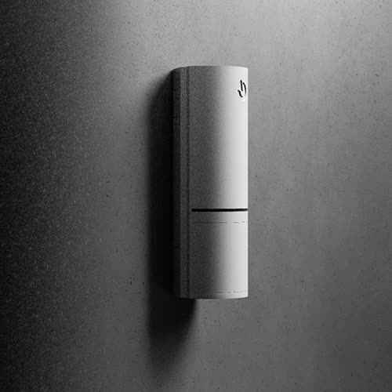

Požární signalizace — elektronická požární signalizace (EPS)
Montáž a projekce elektronické požární signalizace včetně podkladů pro kolaudaci.

Zabýváme se projekcí a instalací systémů požární signalizace. Systém EPS umožňuje včas detekovat vzniklý požár a spustit navazující zařízení – varovné, evakuační, hasicí nebo podpůrná zařízení pro hasičský záchranný sbor.
Ve spolupráci s firmou AEC Novák zajišťujeme napojení instalované EPS na pult centrální ochrany hasičského záchranného sboru.
V rámci servisní smlouvy také zajišťujeme pravidelné školení obsluhy EPS, funkční zkoušky a revize systému.